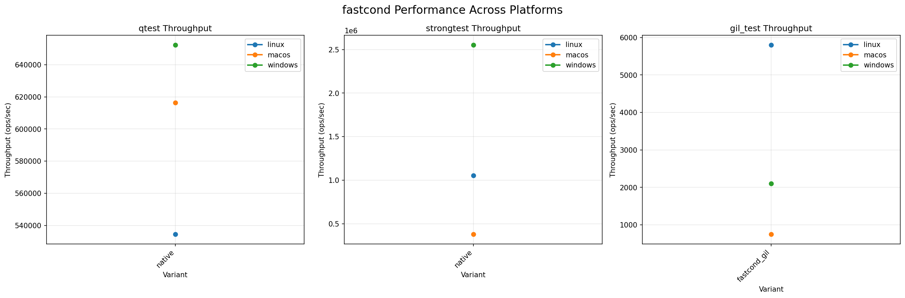
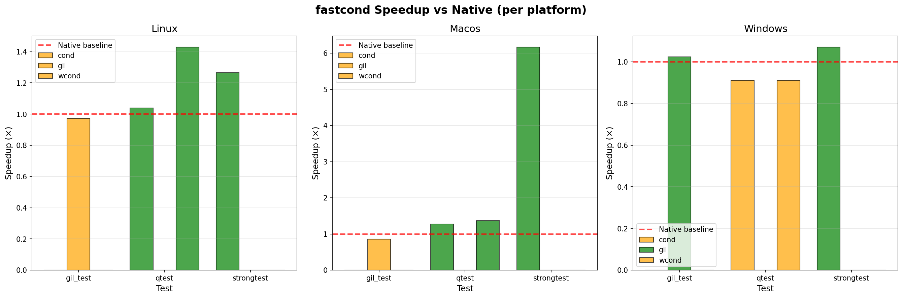

🚀 fastcond Cross-Platform Performance Benchmarks
Performance comparison of fastcond synchronization primitives vs native implementations across Linux, macOS, and Windows platforms.
📊 Performance Comparison Charts
Throughput Comparison Across Platforms

Higher throughput is better. Shows operations per second for each test variant across all platforms.
Speedup vs Native Implementation

Values > 1.0 indicate fastcond outperforms native implementation. Grouped by platform and test.
📈 Detailed Results
📝 About These Benchmarks
These benchmarks are automatically collected from CI builds across multiple platforms:
- Linux (ubuntu-latest): gcc and clang compilers
- macOS (macos-latest): clang compiler
- Windows (windows-latest): MSVC compiler
Tests include:
- qtest: Producer-consumer queue test using separate not_empty/not_full conditions
- strongtest: Single condition variable test validating strong semantics
- gil_test: GIL (Global Interpreter Lock) contention simulation